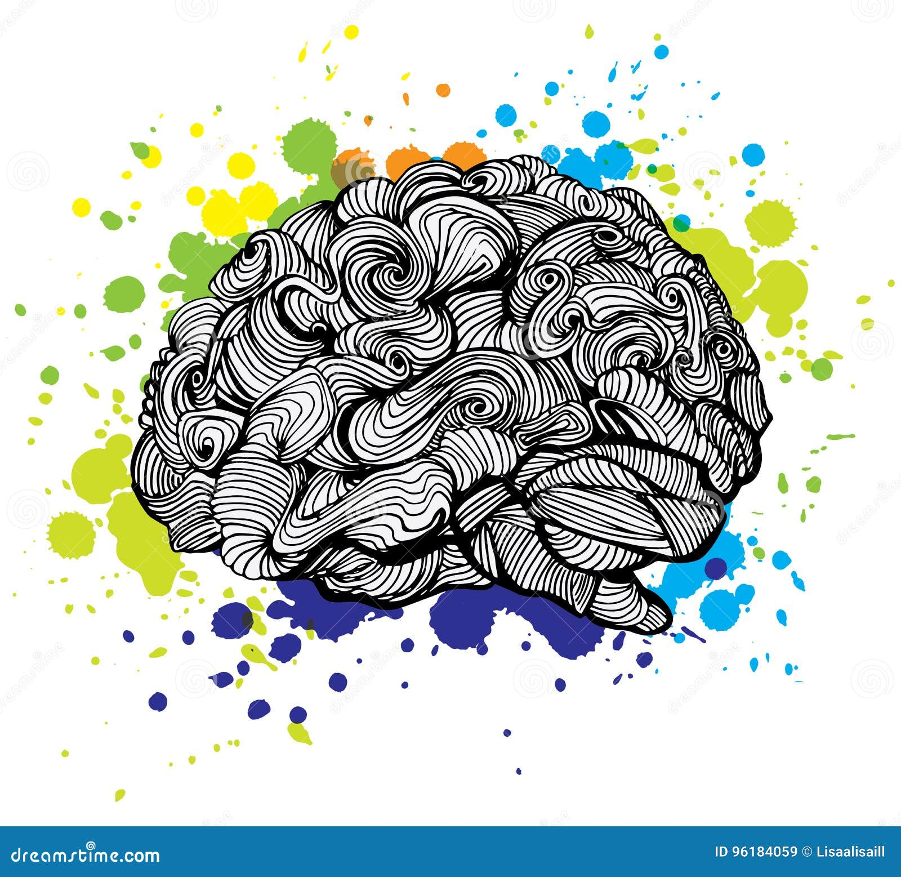
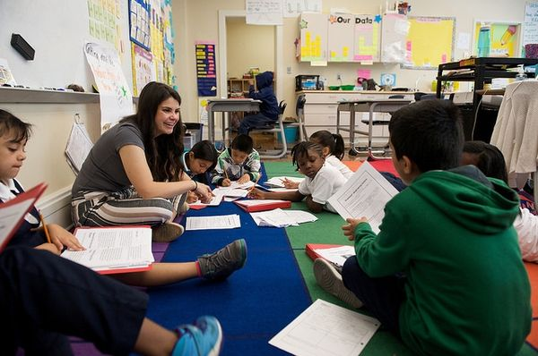

🧠 Cientistas estudam como o cérebro cria mundos imaginários
Uma das mais intrigantes capacidades do cérebro humano é a de imaginar: manipular representações mentais para criar imagens – mesmo que elas não existam no mundo real. Se alguém diz “imagine uma girafa com patas de leão”, cada pessoa cria uma imagem desse animal bizarro em sua mente, ainda que, obviamente, nunca o tenha visto. Nenhuma das áreas cerebrais identificadas até hoje, porém, fornece uma explicação satisfatória para a origem da criatividade e da imaginação. Um novo estudo, de pesquisadores da Faculdade de Dartmouth, nos Estados Unidos, sugere que a resposta para esse problema pode estar em não olhar tão de perto: para os cientistas, a imaginação é controlada por uma ampla rede neural – e não por uma área específica do cérebro.


🧒 Escolas ao redor do mundo estão incentivando a criatividade com aulas de “imaginação guiada”
Na concepção popular, a criatividade é frequentemente considerada um dom exclusivo, reservado a poucos sortudos que nasceram com tal habilidade . Mas, ao contrário da crença popular, a criatividade não é um talento nato e de poucos, mas sim pode ser fortalecida e desenvolvida por meio de diversas estratégias.
Além disso, a criatividade não está confinada somente no domínio artístico. Ao contrário, ela é colocada em prática em diversas profissões e é utilizada em muitas situações do nosso dia a dia.
Portanto, a visão de que seu desenvolvimento naturalmente ocorre apenas nas aulas de educação artística é ultrapassada. A ciência, ao consolidar evidências, revela uma compreensão mais abrangente da criatividade, centrada em duas palavras-chave: inovação e propósito.